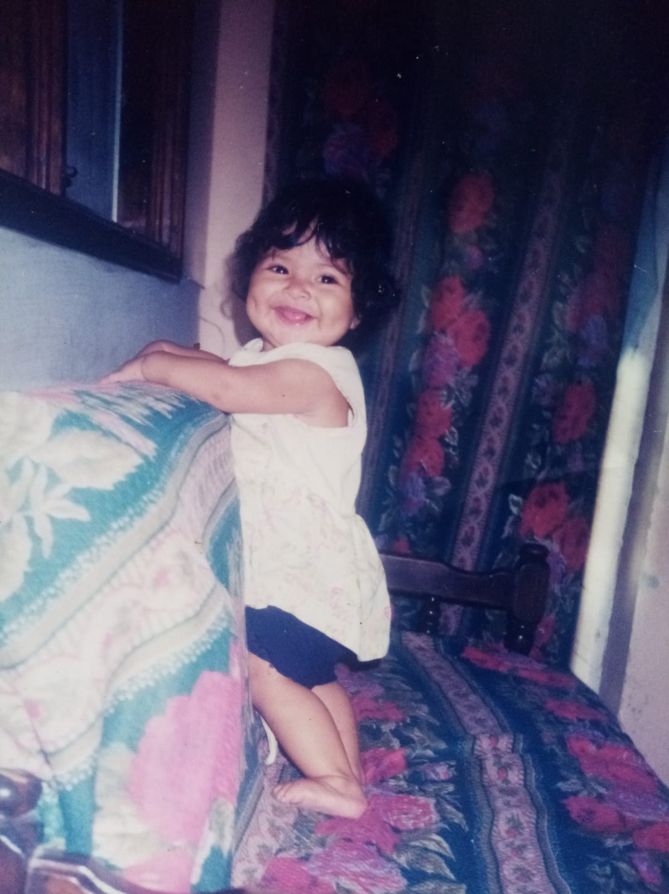
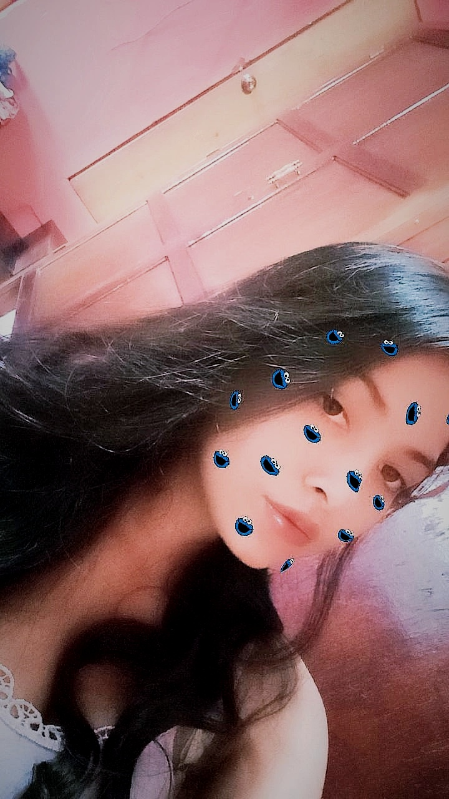

Inicio |
Biografía |
Gustos |
Contacto |

| "Sobre mi"En este apartado se contarán sucesos relevantes de mi vida, mi personalidad, motivaciones, entre otras cosas. |
  |
PRESENTACIÓN Mi nombre es María de los Ángeles Cardona Chavarría nací el 21 de diciembre del 2004 tengo 17 años vivo en la ciudad de Comayagua con mis padres Julio Cesar Cardona y Mirna Chavarría, tengo dos hermanas; Heymi Cardona, Heidi Cardona y un sobrino; Cesar Felipe Cardona. Mi familia es muy extensa ya que por parte de mamá tengo 13 tíos(as) y por parte de papá tengo 4 tíos(as) A pesar de ser bastantes siempre hay unión en cada uno y sobre todo existe ese apoyo que cada uno necesita . Me considero una persona alegre, honesto y sobre todo me gusta ayudar a los demás sin esperar nada a cambio, no me gusta tanto salir prefiero quedarme en mi casa viendo películas o series, soy responsable en mis deberes y siempre trato de dar los mejor de mi en todas las cosas que hago. INFANCIA Mi infancia fue una de las etapas sin duda alguna más importante en vida porque desde ahí se empezó formar mi personalidad, fue una infancia que transcurrió en un ambiente de mucho amor y seguridad por parte de mis padres y toda mi familia. Aunque mis papás siempre trabajan y me dejaban al cuidado de mi prima nunca me sentí sola por parte de ellos al contrario, siempre que ellos llegaban de trabajar trataban de pasar tiempo conmigo y los fines de semana eran familiar. ADOLESCENCIA Esta es una etapa de muchos cambios tanto físicos como psicológicos, una etapa donde somos nosotros mismos el que decide que camino tomar en esta vida, donde nosotros tomamos nuestras propias decisiones. Igual que mi infancia esta etapa ha sido de mucho amor por parte de mis papás y sobre todo de mucho apoyo. El entrar al colegio la Inmaculada ha sido una de las mejores oportunidades que he tenido el entrar a esta institución aumentado en mi el valor de la responsabilidad ya que es un colegio bastante exigente en el aspecto de tareas, exámenes, limpieza, orden y muchas cosas. METAS Este año mi mayor meta es graduarme del colegio, para poder lograr eso tengo que esforzarme, estudiando y cumpliendo con mis deberes de estudiante para cumplir ese objetivo y poder llegar a la universidad con un buen rendimiento y sobre todo teniendo la capacidad de aplicar esos valores que en el colegio nos han inculcado. También otras de mis metas es poder trabajar y darles a mis papás todo lo que ellos me han dado, por todo ese esfuerzo que ellos están dando para que yo sea alguien profesional en la vida. |